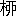

為文学者経
三文字屋金平
棚から
落ちる
牡丹餅を
待つ
者よ、
唐様に
巧みなる
三代目よ、
浮木をさがす
盲目の
亀よ、
人参呑んで
首縊らんとする
白痴漢よ、
鰯の
頭を
信心するお
怜悧連よ、
雲に
登るを
願ふ
蚯蚓の
輩よ、
水に
影る
月を
奪はんとする
山猿よ、
無芸無能食もたれ
総身に
智恵の
廻りかぬる
男よ、
木に
縁て
魚を
求め
草を
打て
蛇に
驚く
狼狽者よ、
白粉に
咽せて
成仏せん
事を
願ふ
艶治郎よ、
鏡と
睨め
競をして
頤をなでる
唐琴屋よ、
惣て世間一切の善男子、
若し遊んで暮すが御執心ならば、
直ちにお宗旨を変へて文学者となれ。
我が
所謂文学者とは
フィヒテが“
Ueber das Wesen des Gelehrten”に
述べたてし、七むづかしきものにあらず。
内新好が『
一目土堤』に
穿りし
通仕込の
御作者様方一連を云ふなれば、其
職分の
更に
重くして
且つ
尊きは
豈に
夫の
扇子で
前額を
鍛へる
野幇間の
比ならんや。
夫れ
文学者を
目して
預言者なりといふは
生野暮一点張の
釈義にして
到底咄の
出来るやつにあらず。
我が
通仕込の
御作者様方を
尊崇し其
利益のいやちこなるを
欽仰し、其
職分をもて
重く
且つ
大なりとなすは
能く
俗物を
教え
能く
俗物に
渇仰せらるゝが
故なり、（
渠等が
通の
原則を
守りて
俗物を
斥罵するにも
関らず。）然しながら
縦令俗物に
渇仰せらる

といへども
路傍の
道祖神の如く
渇仰せらる
にあらす、又
賞で
喜ばるゝと
雖［＃ルビの「いへ」は底本では「いへど」］ども
親の
因果が
子に
報ふ
片輪娘の
見世物の如く
賞で
喜ばるゝの
謂にあらねば、決して／＼
心配すべきにあらす。
否な、
俗物の
信心は
文学者即ち
御作者様方の
生命なれば、
否な、
俗物の
鑑賞を
辱ふするは
御作者様方即ち
文学者が
一期の
栄誉なれば、之を
非難するは
畢竟当世の
文学を
知らざる者といふべし。
此故に
当世の
文学者は
口に
俗物を
斥罵する事
頗る
甚だしけれど、
人気の
前に
枉屈して其
奴隷となるは
少しも
珍らしからず。
大入だ
評判だ四
版だ五
版だ
傑作ぢや
大作ぢや
豊年ぢや
万作ぢやと
口上に
咽喉を
枯らし
木戸銭を
半減にして
見せる
縁日の
見世物同様、
薩摩蝋
てら／＼と
光る
色摺表紙に
誤魔化して
手拭紙にもならぬ
厄介者を
売附けるが
斯道の
極意、
当世文学者の
心意気ぞかし。さりながら
人気の
奴隷となるも
畢竟は
俗物済度といふ
殊勝らしき
奥の
手があれば
強ち
無用と
呼ばゝるにあらず、
却て
之れ
中々の
大事決して
等閑にしがたし。
俗人を
教ふる
功徳の
甚深広大にしてしかも其
勢力の
強盛宏偉なるは
熊肝宝丹の
販路広きをもて
知らる。
洞簫の
声は
嚠喨として
蘇子の
膓を
断りたれど
終にトテンチンツトンの
上調子仇つぽきに
如かず。
カントの
超絶哲学や
余姚の
良知説や
大は
即ち
大なりと
雖ども
臍栗銭を
牽摺り
出すの
術は
遥かに
生臭坊主が
南無阿弥陀仏に
及ばず。されば
大恩教主は
先づ
阿含を
説法し
志道軒は
隆々と
木陰を
揮回す、
皆之れこ
の
呼吸を
呑込んでの
上の
咄なり。
流石に
明治の
御作者様方は
通の
通だけありて
俗物済度を
早くも
無二の
本願となし
俗物の
調子を
合点して
能く
幇間を
叩きてお
髯の
塵を
払ふの
工風を
大悟し、
向ふ
三軒両隣りのお
蝶丹次郎お
染久松より
やけにひねつた「ダンス」の
Miss B. A. Bae. ［＃「Miss B. A. Bae.」は斜体字］瓦斯糸織に
綺羅を
張る
印刷局の
貴婦人に到るまで
随喜渇仰せしむる
手際開闢以来の
大出来なり。
聞けば
聖書を
糧にする
道徳家が二十五銭の
指環を
奮発しての「ヱンゲージメント」、
綾羅錦繍の
姫様が
玄関番の
筆助君に
やいの／＼を
極め
込んだ
果の「ヱロープメント」、
皆之れ
小説の
功徳なりといふ。よしや一
斗の「モルヒ子」に
死なぬ
例ありとも
月夜に
釜を
抜かれぬ
工風を
廻らし
得べしとも、
当世小説の
功徳を
授かり
少しも其
利益を
蒙らぬ事
曾て
有るべしや。
冒険譚の
行はれし十八
世紀には
航海の
好奇心を
焔し、
京伝の
洒落本流行せし
時は
勘当帳の
紙数増加せしとかや。抑も
辻行灯廃れて
電気灯の
光明赫灼として
闇夜なき
明治の
小説が
社会に於ける
影響は
如何。『
戯作』と云へる
襤褸を
脱ぎ『
文学』といふ
冠着けしだけにても其
効果の
著るしく
大なるは
知らる。
英吉利は
野暮堅き
真面目一方の
国なれば、
人間の
元来醜悪なるにお
気が
附かれずして、
ゾオラが
偶々醜悪のまゝを
写せば
青筋出して
不道徳文書なりと
罵り
叫く事さりとは
野暮の
行き
過ぎ
余りに
業々しき
振舞なり。さりながら
論語に
唾を
吐きて
梅暦を
六韜三略とする
当世の
若檀那気質は
其れとは
反対にて
愈々頼もしからず。
東京の或る
固執派教会に
属する
女学校の
教師が
曾我物語の
挿画に
男女の
図あるを
見て
猥褻文書なりと
飛んだ
感違ひして
炉中に
投込みしといふ一ツ
咄も
近頃笑止の
限りなれど、
如何考へても
聖書よりは
小説の
方が
面白いには
違ひなく、
教師の
眼を
窃んでは「よくッてよ」
派小説に
現を
抜かすは
此頃の
女生徒気質なり。
例へば
地を
打つ
槌は
外る
とも
青年男女にして
小説読まぬ者なしといふ
鑑定は
恐らく
外れツこななるべし。
俗界に
於ける
小説の
勢力斯くの
如く
大なれば
随て
小説家即ち
今の
所謂文学者の
チヤホヤせらるゝは
人気役者も
物の
数ならず。
此故に
腥き
血の
臭失せて
白粉の
香鼻を
突く
太平の
御代にては
小説家即ち
文学者の
数次第々々に
増加し、
鯛は
［＃「鯛は」はママ］花は
見ぬ
里もあれど、
鯡寄る
北海の
浜辺、
薯蕷掘る
九州の
山奥に
到るまで
石版画と
赤本は
見ざるの
地なしと
鼻うごめかして
文学の
功徳無量広大なるを
説く
当世男殆んど
門並なり。
寄れば
触れば
高慢の
舌爛してヤレ
沙翁は
造化の
一人子であると
胴羅魔声を
振染り
西鶴は
九皐に
鳶トロヽを
舞ふと
飛ンだ
通を
抜かし、
何かにつけては
美学の
受売をして
田舎者の
緋メレンスは
鮮かだから
美で江戸ツ子の
盲縞は
ジミだから
美でないといふ
滅法の
大議論に
近所合壁を
騒がす事少しも
珍らしからず。
好奇な
統計家が
概算に依れば
小遣帳に
元禄を
拈る
通人迄算入して
凡そ
一町内に百「ダース」を
下る事あるまじといふ。
夫れ
台所に於ける
鼠の
勢力の
法外なる
飯焚男が
升落しの
計略も更に
討滅しがたきを思へば、
社会問題に
耳傾くる人いかで此
一町内百「ダース」の
文学者を
等閑にするを
得べき。若し
惣ての
文学者を
駆て
兵役に
従事せしめば
常備軍は
頓に
三倍して
強兵の
実忽ち
挙がるべく、
惣ての
文学者に
支払ふ
原稿料を
算れば一万
噸の
甲鉄艦何艘かを
造るに
当るべく、
惣ての
文学者が
消費する
筆墨料を
徴収すれば
慈善病院三ツ四ツを
設る事
決して
難きにあらず、
惣ての
文学者が
喰潰す
米と
肉を
蓄積すれば
百度饑饉来るとも
更に
恐るゝに
足らざるべく、
若し又
惣ての
文学者を
一時に
殺戮すれば其
死屍は以て
日本海を
埋むべく其
血は以て
太平洋を
変色せしむべし。
文学者は一の
社会問題なり、
貧民が、
僧侶が、
娼妓が
社会問題となれる如く。
熟々考ふるに
天に
鳶ありて
油揚をさらひ
地に
土鼠ありて
蚯蚓を
喰ふ
目出度き
中に
人間は
一日あくせくと
働きて
喰ひかぬるが
今日此頃の
世智辛き
生涯なり。
学校の
卒業証書が二
枚や三
枚有つたとて
鼻を
拭く
足にもならねば
高が
壁の
腰張か
屏風の
下張が
関の
山にて、
偶々荷厄介にして
箪笥に
蔵へば
縦令へば
虫に
喰はるゝとも
喰ふ
種には
少しもならず。
学士ですの
何のと云ツた
処で
味噌摺の
法を
知らずお
辞義の
礼式に
熟せざれば
何処へ
行ても
敬して
遠ざけらる
が
結局にて
未だしも
敬さるゝだけを
得にして
責めてもの
大出来といふべし。
ミルトンの
詩を
高らかに
吟じた
処で
饑渇は
中々に
医しがたく
カントの
哲学に
思を
潜めたとて
厳冬単衣終に
凌ぎがたし。
学問智識は
富士の
山ほど
有ツても
麺包屋が
眼には
唖銭一文の
価値もなければ
取ツけヱべヱは
中々以ての
外なり。
トヾの
結局が
博物館に
乾物の
標本を
残すか
左なくば
路頭の
犬の
腹を
肥すが
世に
学者としての
功名手柄なりと
愚痴を
覆す
似而非ナツシユは
勿論白痴の
ドン詰りなれど、さるにても
笑止なるは
世の
是沙汰、
飯粒に
釣らるゝ
鮒男がヤレ
才子ぢや
怜悧者ぢやと
褒めそやされ、
偶さか
活きた
精神を
有つ
者あれば
却て
木偶のあしらひせらるゝ事
沙汰の
限りなり。
騙詐が
世渡り
上手で
正直が
無気力漢、
無法が
活溌で
謹直が
愚図、
泥亀は
天に
舞ひ
鳶は
淵に
躍る、さりとは
不思議づくめの
世の
中ぞかし。
斯る
中にも
社会に
大勢力を
有する
文学者どのは
平気の
平三で
行詰りし
世を
屁とも
思はず。
春うら／＼
蝶と
共に
遊ぶや
花の
芳野山に
玉の
巵を
飛ばし、
秋は
月てら／＼と
漂へる
潮を
観て
絵島の
松に
猿なきを
怨み、
厳冬には
炬燵を
奢の
高櫓と
閉籠り、
盛夏には
蚊帳を
栄耀の
陣小屋として、
米は
俵より
涌き
銭は
蟇口より
出る
結構な
世の
中に
何が
不足で
行倒れの
茶番狂言する事かと
ノンキに
太平楽云ふて、
自作の
小説が
何十遍摺とかの
色表紙を
付けて
売出され、
二号活字の
広告で
披露さるゝ
外は
何の
慾もなき
気楽三
昧、あツたら
老先の
長い
青年男女を
堕落せしむる事は
露思はずして
筆費え
紙費え、
高が
大家と云はれて
見たさに
無暗に
原稿紙を
書きちらしては
屑屋に
忠義を
尽すを
手柄とは
心得るお
目出たき
商売なり。
月雪花は
魯か
犬が
子を
産んだとては
一句を
作り
猫が
肴を
窃んだとては
一杯を
飲み
何かにつけて
途方もなく
嬉しがる事
おかめが
甘酒に
酔ふと
仝じ。
斯くの
如く
文学者は
身分不相応に
勢力を
有し且つ
身分不相応に
のンきなり。
世に
気楽なるものは
文学者なり、
世に
羨ましき
者は
文学者なり、
接待の
酒を
飲まぬ者も
文学者たらん事を
欲し、
落ちたるを
拾はぬ者も
文学者たるを
願ふべし。
然るに
世に
すねたる
阿呆は
痛く
文学者を
斥罵すれども是れ
中々に
識見の
狭陋を
現示せし
世迷言たるに
過ぎず。
冷静なる
社会的の
眼を
以て
見れば、
等しく之れ
土居して
土食する一ツ
穴の
蚯蚓
の
徒なれば
何れを
高しとし
何れを
低しとなさん。
濁醪を
引掛ける者が
大福を
頬張る者を
笑ひ
売色に
現を
抜かす者が
女房に
デレる
鼻垂を
嘲る、之れ皆
他の
鼻の
穴の
広きを
知て
我が
尻の
穴の
窄きを
悟らざる
烏滸の
白者といふべし。
窮理決して
迂なるにあらず
実践何ぞ
浅しと云はんや。
魚肴は
生臭きが
故に
廉からず
蔬菜は
土臭しといへども
尊とし。
馬に
角なく
鹿に
※［＃「馬＋のつくり」、219-16］なく
犬は
※［＃「口＋若」、219-16］と
啼いて
じやれず
猫は
ワンと
吠えて
夜を
守らず、
然れども
自ら
馬なり
鹿なり
犬なり
猫なるを
妨けず。
稼ぐものあれば
遊ぶ者あり
覚める者あれば
酔ふ者あるが即ち
世の
実相なれば
己れ
一人が
勝手な
出放題をこねつけて
好い
子の
顔をするは云はふ
様なき
歿分暁漢言語同断といふべし。
縦令石橋を
叩いて
理窟を
拈る
頑固党が
言の如く、
文学者を
以て
放埓遊惰怠慢痴呆社会の
穀潰し
太平の
寄生虫となすも、
兎に
角文学者が
天下の
最幸最福なる者たるに
少しも
差閊なし。
然るを
愚図々々と
賢しらだちて
罵るは
隣家のお
菜を
考へる
独身者の
繰言と
何ぞ
択まん。
加之、
文学者を
以て
怠慢遊惰の
張本となす
おせツかいは
偶／＼
怠慢遊惰の
却て
神の
天啓に
協ふを
知らざる
白痴なり。
謹んで
慮かるに
神の
御恵洽かりし
太古創造の
時代には
人間無為にして
家業といふ七むづかしきものもなければ
稼ぐといふ
世話もなく
面白おかしく
喰て
寝て
日向ぼこりしてゐられたものゝ如し。
アダムの
二本棒が
意地汚さの
摂み
喰さへ
為ずば
開闢以来五千
年［＃ルビの「ねん」は底本では「わん」］の
今日まで
人間は
楽園の
居候をしてゐられべきに
とンだ飛ツ
塵が
働いて
喰ふといふ
面倒を
生じ
は
扨も
迷惑千万の事ならずや。
神が
創造の
御心は
人間を
楽ましめんとするにありて
苦ましめんとするにあらず。
無為は
天則なり、
無精は
神慮に
協へり。
正直の
頭に
神宿る――
嫌な思をして
稼ぐよりは
真ツ
正直に
遊んで
暮すが
人間の
自然にして
祈らずとても
神や
守らん。
文学者を以て
大のンきなり
大気楽なり
大阿呆なりといふ事の
当否は
兎も
角も
眼ばかり
パチクリさして
心は
藻脱の
売となれる
木乃伊文学者は
豈に是れ
人間の
精粋にあらずや。
且つ又
聖経の教ふる
処に
依れば
天国に
行かんとすれば
是非とも
小児の
心を
有たざるべからず。
小児の如く
タワイなく、
意気地なく、
湾白で、
ダヾをこねて、
遊び
好で、
無法で、
歿分暁で、
或時はお
山の
大将となりて
空威張をし、
或時は
デレリ茫然としてお
芋の
煮えたも
御存じなきお
目出たき者は
当世［＃「たうせう」はママ］の
文学者を
置いて
誰ぞや。
文学者なる哉、
文学者なる哉。
天変地異を
笑つて
済ますものは
文学者なり。
社会人事を
茶にして
仕舞ふ者は
文学者なり。
否な、神の
特別なる
贔屓を
受けて
自然に
hypnotize さる
ものは
文学者なり。
文学者なる哉、
文学者なる哉。
我れ
三文字屋金平夙に
救世の
大本願を
起し、
終に
一切の
善男善女をして
悉く
文学者たらしめんと
欲し、百で
買ツた
馬の如く
のたり／＼として
工風を
凝し、
虱を
捫る事一万疋に及びし時
酒屋の
厮童が「キンライ」
節を聞いて
豁然大悟し、茲に
椽大の
椎実筆を
揮て
洽く
衆生の
為に
為文学者経を
説解せんとす。
右から見ても左から見ても文学者は最幸最福なる動物なり。我が
抜苦与楽の
説法を
疑ふ事なく
一図に
有がたがツて
盲信すれば
此世からの
極楽往生決して
難きにあらず。
銀価の
下落を
心配する
苦労性、
月給の
減額に
気を
揉む
神経先生、
若くは
身躰にもてあます
食もたれの
豚の
子、
無暗に
首を
掉りたがる
張子の
虎、
来つて此
説法を
聴聞し而してのち
文学者となれ。
朝飯前の
仕事にして
天下を
驚かす事
虎列刺よりも
甚だしく
天下に
評判さる
事
蜘蛛男よりも
隆んなるは唯其れ
文学者あるのみ、
文学者あるのみ。
●表記について
- このファイルは W3C 勧告 XHTML1.1 にそった形式で作成されています。
- ［＃…］は、入力者による注を表す記号です。
- 「くの字点」は「／＼」で、「濁点付きくの字点」は「／″＼」で表しました。
- 「くの字点」をのぞくJIS X 0213にある文字は、画像化して埋め込みました。
- 傍点や圏点、傍線の付いた文字は、強調表示にしました。
- この作品には、JIS X 0213にない、以下の文字が用いられています。（数字は、底本中の出現「ページ-行」数。）これらの文字は本文内では「※［＃…］」の形で示しました。
|
「馬＋のつくり」
|
|
219-16 |
|
「口＋若」
|
|
219-16 |